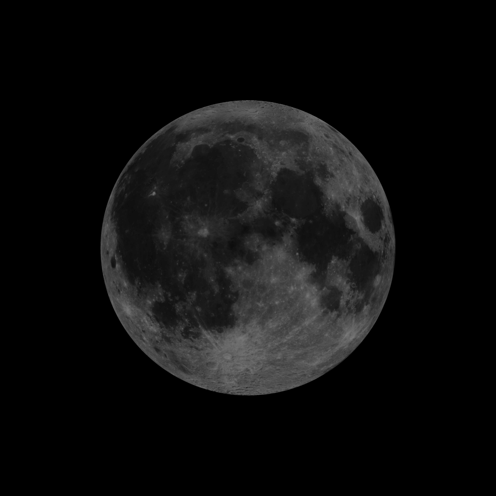
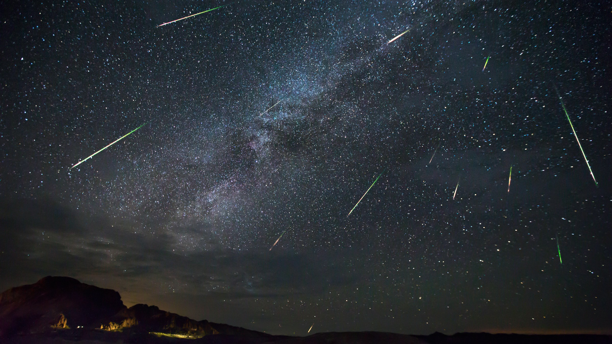
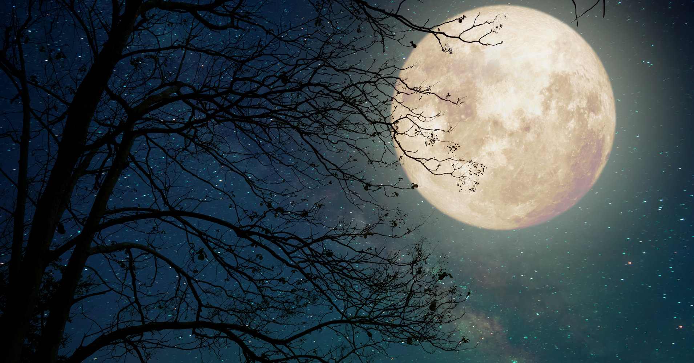
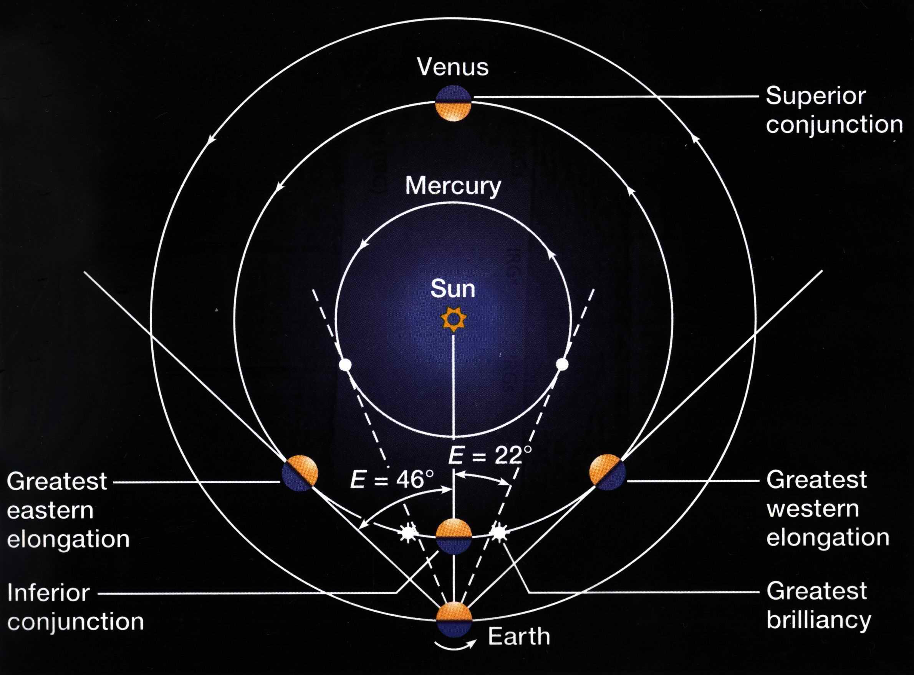
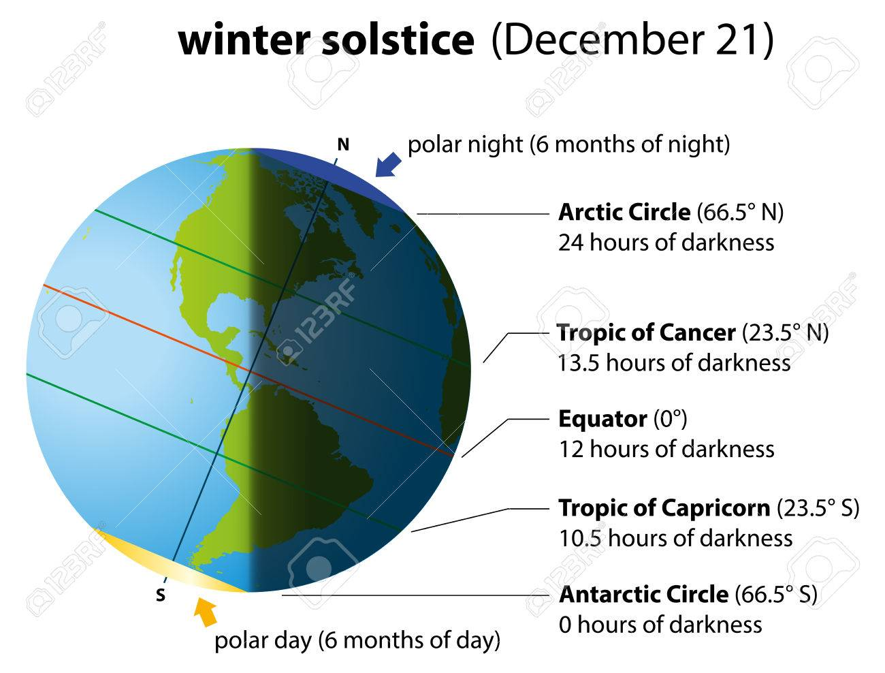

Upcoming events
October 9 - New Moon. At 03:47 UTC the New Moon will shine, but, sadly, won't be visible in the night sky. Still, you can enjoy one fine evening just observing faint objects such as galaxies and star clusters, because there is no moonlight to interfere the scene.
October 22, 23 - Orionids Meteor Shower. This meteor shower is an average one, thus the sky will be light with only 20 meteors per hour at its peak. The scene will be all thanks to comet Haley. :)
November 23 - Full Moon. At 05:40 UTC you can experience the breathtaking sight of the so called since ancient times "The Hunter's Moon" as this was the time of year to set the beaver traps before the swamps and rivers froze.
December 15 - Mercury at Greatest Western Elongation. This will be the best time to look at the sky before sunrse and search for Mercury, because the planet will be reaching its greatest western elongation of 21.3 degrees from the Sun.
December 21 - December Solstice. The South Pole of the earth will be tilted toward the Sun, which will have reached its southernmost position in the sky and will be directly over the Tropic of Capricorn at 23.44 degrees south latitude. This is the first day of winter (winter solstice) in the Northern Hemisphere and the first day of summer (summer solstice) in the Southern Hemisphere.
